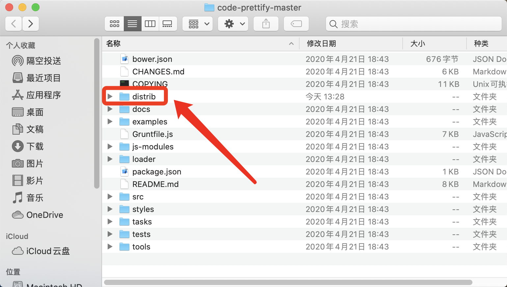
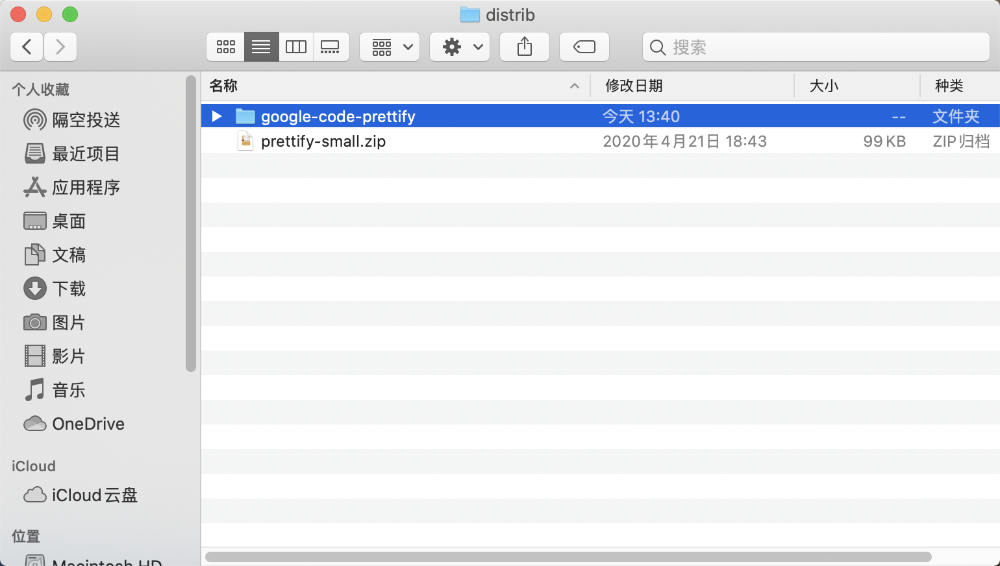
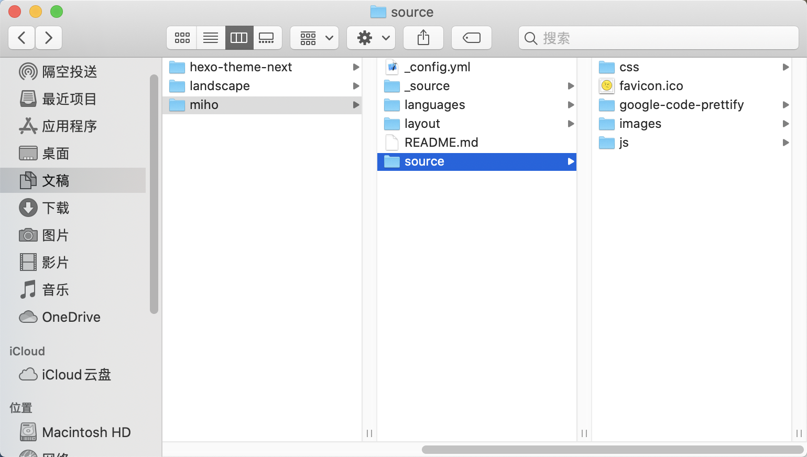

因为最近学习Java，博客笔记里多了很多代码段，发现Hexo自带的代码高亮插件对语法的高亮支持得并不是很好，于是萌生了更换高亮插件的想法。
1. 禁用Hexo自带的highlight
在Hexo根目录下的_config.yml文件中，修改关于highlight的设置。
highlight:
enable: true
line_number: true
auto_detect: false
tab_replace: " "修改为：
highlight:
enable: false
line_number: false
auto_detect: false
tab_replace: false可能在修改配置文件后，无论是本地使用hexo s查看还是生成部署到线上查看都没有实际取消默认代码高亮，这时需要使用hexo clean来清除缓存文件 (db.json) 和已生成的静态文件 (public)。
2. 下载Google Code Prettify
前往下载Google Code Prettify，直接把仓库的Zip下载到本地。
然后到distrib文件夹下解压文件得到包含js和css源代码的文件夹google-code-prettify。


把这个文件夹放入Hexo目前使用的主题文件的source目录下（放置的子目录可根据自己情况而定，我直接放在了source的根目录下）。

3. 加载css和js使用Prettify高亮
不同主题加载css和js的语句位置可能不一样，但是基本都是在head布局文件中的<head>标签内加载css，在footer布局文件中加载js。
对于主题miho，在路径/miho/layout/_partial 下打开head.ejs，在加载css样式的地方添加语句：
<!--加载prettify代码高亮样式-->
<link href="/google-code-prettify/prettify.css" type="text/css" rel="stylesheet" />同样的路径下，打开after-footer.ejs，在加载jQuery的语句后面添加：
<!--加载prettify代码高亮js-->
<script type="text/javascript" src="/google-code-prettify/prettify.js"></script>
<script type="text/javascript">
$(document).ready(function(){
$('pre').addClass('prettyprint linenums');
$('code').addClass('prettyprint');
prettyPrint();
})
</script>这里因为Markdown文件生成HTML文件时，这些代码块会自动生成标签，但却并没有使用我们手动添加的第三方高亮css，所以要手动用jQuery语句为代码块添加prettify的高亮Class，这样才能使这些代码块在HTML页面上拥有高亮效果。
4. 代码高亮样式的优化
这时使用hexo s后在本地已经可以查看到prettify的默认高亮效果了，但是还存在一些问题：
- 默认样式配色和背景都不好看；
- 代码的行号只有每五行才有显示；
- 一行代码过长时会超出代码块边界。
尤其对于本站使用的主题miho，因为作者对高亮风格有添加相应的css文件，因此两个样式有很多冲突的地方，效果可以用乱七八糟来形容，因此不得不采取优化。
首先，禁用miho自带的高亮样式。在路径/miho/source/css路径下，打开style.styl文件，将导入highlight.styl的语句注释掉。
// @import "_partial/highlight"前往下载prettify主题，在dist/themes目录下有多款主题，找到心仪的css文件，复制到路径/miho/source/google-code-prettify下，然后修改之前引入css的语句，比如我使用的高亮主题是tomorrow.css，所以将语句修改为：
<link href="/google-code-prettify/tomorrow.css" type="text/css" rel="stylesheet" />此外，我还对tomorrow这个主题进行了一些修改：
- 更改代码块背景色；
- 更改代码内容的字体大小；
- 让代码行号右对齐；
- 当一行代码过长溢出时使用滚动条。
更改后的css语句如下：
.prettyprint {
background: #f6f8fa;
font-family: Menlo, "Bitstream Vera Sans Mono", "DejaVu Sans Mono", Monaco, Consolas, monospace;
border: 0 !important;
}
.pln {
color: #4d4d4c;
}
ol.linenums {
margin: 8px 30px;
padding: 15px 15px;
color: #8e908c;
}
pre{
overflow: auto;
}
ol.linenums li {
position: relative;
}
ol.linenums li:before {
position: absolute;
display: inline-block;
}
li.L0,
li.L1,
li.L2,
li.L3,
li.L4,
li.L5,
li.L6,
li.L7,
li.L8,
li.L9 {
font-size: 95%;
padding-left: 0.5em;
background-color: #f6f8fa;
list-style-type: decimal;
}最后还有一个小优化没能解决，是关于代码行号的问题。在默认的高亮样式中，代码行号是通过单独的表格td元素来实现的，而在prettify中使用的是列表元素ol，这就导致出现行号带有dot，并且默认左对齐。
我在stackoverflow上查找了许久，发现了可以分别解决这两个问题的办法，但是却不能同时使用，同时使用会导致出现两个列表，且样式重叠。咨询同学后一致认为对于自定义有序列表的样式编写比较麻烦，完全应该使用块级元素比如div或者span手动代替，但是在prettify里怕是不能实现了。